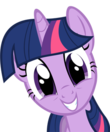
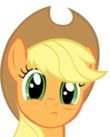
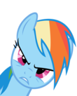
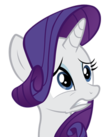
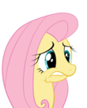
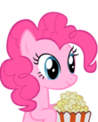
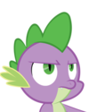

De: La Frikipedia, la enciclopedia extremadamente seria.
De: La Frikipedia, la enciclopedia extremadamente seria. De: La Frikipedia, la enciclopedia extremadamente seria.
Los 7 ponys principales de esta psicótica serie son:
| Personaje | Descripción |
|---|---|
|  Twilight Sparkle |
Es el personaje principal de la serie, es una unicornio nerd de color morado que adora Un día Celestia decidió mandar a Twilight a Villa Pony para que las demás ponies le hagan perder su cordura y la tuvieran que enviar a un manicomio, como no funcionó ahora le escribe informes sobre la amistad y lo bonito que es conocer nuevos amigos, los cuales Celestia los lee con sumo cuidado y guarda todos los informes en sus depósitos Sus superpoderes son la lectura veloz y la magia. |
|  AppleJack |
Es una pony del viejo oeste que trabaja en un campo de Además de cosechar manzanas se dedica a criar cerdos para vender la panceta en el mercado negro, actividad sólo realizable mediante una pequeña comisión para la guardia real. Es una trabajólica (lo opuesto a un usuario de la inciclopedia) ya que su papá salió a comprar cigarrillos y nunca regresó y su mamá probablemente se murió de cáncer. Ahora tiene que hacerse cargo de la familia ella sola junto con su hermano "el macho" Big Mac, para pagar los estudios de su hermana fracasada y cuidar a su abuela que solo le queda un par de días antes de que se muera de cáncer y se convierta en comida de gusanos (la familia tiene una cierta predisposición a morir de cáncer). Cuando no está acosando a sus hermanos o haciendo el ridículo por exceso de trabajo, Applejack se encuentra a escondidas con Rainbow Dash para practicar nuevas maniobras agrícolas con ella. Debido a que es el peor pony, no tiene superpoderes, o si los tiene no son buenos. Se rumorea que es la pony con mayor masa (algunos dicen que está hecha, en parte, de antimateria o algun metal superpesado o estrella de neutrones), y que tiene alguna especie de poder comunicativo con los árboles de manzanas despues de Usar la Super-Patada. |
|  Rainbow Dash |
Es una pegaso que adora hacer acrobacias en el cielo, sobre todo a la velocidad de la luz (es que en ese lugar la luz es muy lenta y se comporta como materia).
También es lesbiana y su gran sueño es acostarse con los Wonderbolts, que son un grupo de pegasos psicópatas sexuales portadores de VIH que les sale humo de sus anos y suelen hacer concursos para elegir a un pegaso que pueda sobrevivir a una noche de sexo aéreo con ellos. Su “oficio” en Villa Pony es el de controlar el clima ya que todos los efectos meteorológicos son generados artificialmente en Villa Pony (como en Sim City), así que cada vez que hay algún desastre natural es probablemente porque Cuando no está follando con otras ponies, Rainbow Dash se dedica a romper la barrera de la luz. Para que esto ocurra, un objeto debe alcanzar una velocidad de 340 m/s y una aceleración equivalente a 1667.2 veces la de la gravedad [1]. De esta forma, se crea un agujero negro en el espacio-tiempo 3D, y es ahí cuando se liberan los 256 colores del arco iris mientras la pobre pony se convierte en un meteorito viviente del mismo color. A esta "habilidad" se le llama Sonic Rainboom. Hasta ahora nadie sabe cómo un caballo alado pueda generar semejante velocidad, pero se sospecha que Rainbow Dash es consumidora de EPO, esteroides u otras drogas prohibidas en competiciones olímpicas para mejorar el performance atlético. Otras hipótesis afirman que al igual que cierta persona Rainbow Dash posee el Gene X, otorgándola el poder Es la mejor pony para la creadora y le dio los mejores superpoderes: Puede controlar el clima, la que más colores tiene, es 20% mas cool (De 0% cool) que cualquier otro personaje (no se imaginan la cantidad de foros que hay con este nombre), la que vuela más rápido (Pinkie Pie es más rápida), el poder del lesbianismo y la que mayor tolerancia y efectividad tiene para el uso de doping. |
|  Rarity |
Es una unicornio obsesionada con la moda, el status social y su apariencia física, por lo que sufre de bulimia. Se cree super modelo (apenas es diseñadora de moda) y se caracteriza por hacer ropa mediocre con detalles baratos de baja costura por máquina (no se olviden que en su pueblo sus prendas se consideran lujosas).
Es dueña de una Boutique llamada Carrusel (¿Entienden? Como son caballos... en un carrusel), Rarity se dedica a confeccionar trajes para fiestas de disfraces, capas para niños y vestidos para pasarelas del tercer mundo. Empezó teniendo como clientes sólo a sus amigas pero, aunque parezca increíble, obtuvo verdaderos clientes ya que sus precios son muy competitivos. Se considera inútil su trabajo, ya que los ponies andan desnudos la mayor parte del tiempo. Su secreto de diseñadora consiste en agregarle piedras preciosas a sus invenciones que consigue gracias a uno de sus únicos dos trucos de magia que aprendió al pasarse horas jugando al Bejeweled (el otro es el mediocre truco de levitación de objetos livianos) Es la más heterosexual del grupo: su sueño era casarse con el príncipe de Canterlot, por el dinero y el glamur. Lamentablemente la relación perdió toda posibilidad de sexo cuando descubrió que él resultó ser más afeminado que ella, lo cual le resultó intolerable (además de arruinarle el vestido). Otra posibilidad sexual es el joven dragón Spike, el esclavo de Chispazo Crepuscular. Para la desgracia del enano violeta, ella prefiere utilizarlo sólo como utensilio de confección. Al igual que Applejack, los padres de Rarity la abandonaron en Villa Pony junto con su "hermana" Sweetie Bell (hay rumores de que ella en realidad es su hija). Ahora Rarity se dedica a confeccionar sus vestidos para pagar el mantenimiento de su Boutique pero como el dinero no le alcanza para pagar la educación de su hermanita, no la manda a la escuela. Sino la trata como su mascota, la deja afuera de su casa en las noches para que duerma y le permite salir a jugar en días sin lluvia. Como su hermana no sirve ni para tope de puerta Rarity usa a su gato para que le ayude con sus vestidos. Fluttershy ha pensado en llamar a la sociedad protectora de animales para que haga algo al respecto, sin embargo tal asociación no existe en una sociedad compuesta por ponys. Rarity tiene el superpoder de la belleza, lo cual le permite obtener favores a cambio de nada. No necesita pagar con sexo. |
|  Fluttershy |
Otra pegaso, esta vez de color amarillo, pero vuela mal. Es zoofilica, y ultra cobarde.
Adora hacerse la buenita y calmada, cantando para atraer pajaritos y conejitos que la ayuden con diversos asuntos, desde tareas del hogar hasta masturbarse o tener relaciones, pasando por recibir sus huevos y otras tareas misceláneas. Sin embargo si las criaturas no le hacen caso, usa su mirada fatal para obligarles a que le presten atención. Si eso tampoco funciona REZA para que no entre en un ataque de cólera. Habla increíblemente bajo, producto de un trauma infantil probablemente provocado por su conejo mascota que la acosó sexualmente en repetidas ocasiones. En otras palabras, Fluttershy es el producto de la extraña combinación entre todas las princesas Disney, Mikuru, Nyu y un pegaso enano ¿El resultado? D'AAAWWWW Qué Moe es Adorable!!!!! En serio, una gran cantidad de otakus que ven esta serie tiene como personaje favorito a Fluttershy, algunos se toman este "agrado" muy en serio. Cuando era joven, Rainbow Dash casi la asesina aventándola accidentalmente de una nube, pero es salvada por un grupo de mariposas. Ya en la tierra los animales la toman como rehén y la obligan a ser líder de la revolución anti-ponys por medio de maltratos físicos, psicológicos y sexuales para que los animales silvestres vuelvan a gobernar Ecuestria y acabar con la tiranía de la princesa Trollestia y con los ponies como especie dominante. Ni que decir tiene que por las noches se dedica a hurtarle manzanas en el huerto de Apelyá para chuparles Como superpoderes tiene la habilidad de comunicarse y tratar con los animales y niños pequeños,convertirse en hulk y la ira (que son lo mismo). |
|  Pinkie Pie |
Una pony hiperkinetica compulsiva que adora jugar bromas, hacer fiestas, comer azucar, disfrazarse de prostituta, cantar y consumir todo tipo de drogas (especialmente cocaína). En todos los episodios que ella aparece no pierde oportunidad para cantar al menos una puta canción y cuando no está en una fiesta o preparando una fiesta, o diciendo boludeces (o las tres al mismo tiempo) se dedica a romper la cuarta barrera (la ligera línea entre la ficción y la realidad). Cuando nadie la ve, se supone que está dándole al azucar impalpable
Su actitud indica claramente que sufre de esquizofrenia, ya que cuando le da depresión comienza a hablar con rocas y sacos de harina, probablemente causado por Actualmente Pinkie trabaja en una "pastelería" junto con el señor y la señora "Cake" (quienes la compraron cuando sus padres la pusieron en venta después de haberse esnifado tres cuartos de hectárea de campo rocas) para atraer más clientes al maravilloso mundo de lo dulce. Tiene que tomar constantemente sus pastillas antidepresivas si no la serie dejaría de ser apta para todo público y se convertiría en una algo como esto. Como superpoderes tiene la habilidad de predecir el futuro a corto plazo(sólo sucesos horribles), poder sacar 6 brazos extra, sacar dedos de sus patas, intuir lo que ocurre en una dimensión alterna, la vitalidad de las drogas, la diversión, la amistad en cualquier lugar y momento, super velocidad (comparable a la de droopy),romper la cuarta pared y verte masturbarte a su costa, y convertir a Twilight en una machine gun,entre otros poderes sociales miscelaneos. |
|  Spike |
Es el esclavo no sexual de Twilight y Rarity (ya que NADIE en esta caricatura tiene organos sexuales). Es un bebé dragón que adora devorar gemas y perdió la cordura al convivir con demasiadas ponys hembras sin haber visto jamás en su vida una dragona. Quiere garcharse en especial a Rarity.
Lamentablemente Spike no entiende que él solo es un crío de dragón, cuando crezca medirá 30 veces más que un pony, así que probablemente no pueda "demostrar su amor" apropiadamente. Además que la sola idea de ver a un dragón follando con un pony es Escribe las cartas que Twilight le envía a la princesa Trollestia con un eructo de fuego hacia su castillo y recibe cartas de la misma manera, es como el "hotmail" en EcuestriaVilla Pony. Resumiendo, sus superpoderes son el de mensajero instantáneo, el deseo sexual ante cualquier hembra, dientes más duros que los diamantes, habilidades de pala, resistencia al dolor y otros poderes misceláneos de macho (eructos, humor, etc). |
Los extras otros personajes con menor importancia son:
Es un alicornio (unicornio y pegaso al mismo tiempo), una diosa y la reina princesa de facto de Ecuestria. Aunque a muuuy simple vista parezca buena y justa, en realidad es una tirana dictadora que controla el Sol desde que existen registros y la Luna desde que destituyó a su propia hermana del cargo.
Obliga a todos los ponys a que se adhieran al sistema capitalista, que le paguen impuestos y que se arrodille y le rindan culto cuando ella pasa cerca. Si no cumplen con sus mandatos, Celestia les provocará quemaduras del grado que corresponda con la ofensa y eventualmente los mandará a la Luna.
Es la "mentora" de Twilight, aunque todos saben que la usa para sus perversiones sexuales y levantar su propio ego hasta que se aburrió y la mandó a Villa Ponypara que su malvada hermana la matase.
Sus superpoderes son: ser más grande que los demás ponies, por lo tanto tener más "plot"; ser la más vieja; ser blanca; ser una Diosa; controlar el Sol, la Luna, y el resto de las estrellas; el poder de las bananas; el poder de la pedofilia (es tan grande que cualquier otro pony con el cual pueda tener relaciones es menor de edad); el poder de enviar a los ponies a la Luna y el poder de Troll.
La hermana de Celestia que se volvió negra se volvió malvada. Es otro alicornio y dios. Decidió acabar con la tiranía de su hermana tiranía al promover el comunismo y la revolución de los ponys terrestres. Al ver esto, Celestia decidió aprisionar preventivamente a su hermana en la Luna durante 1000 años. Cuando fue liberada, se transformó en Nightmare Moon y Celestia huyó de Ecuestria, como buen dictador demócrata. Sólo decidió volver cuando fue derrotada por las ponies. Finalmente, a modo de castigo, Celestia prohibió que aparezca durante toda la primera temporada.
En la primera temporada Luna sólo ha aparecido en unos 2 o 3 minutos en el segundo episodio y tiene más fans que Applejack quien ha aparecido en todos los episodios excepto uno (vea también: ironía).
Superpoderes: El poder del socialismo/comunismo, el poder de transformarse en una versión más poderosa de sí misma.
Razones por las cuales la Princesa Luna es una perra
Es la (supuesta) sobrina de Trollestia , esposa de Shining Armor y niñera de Twilight , cuidaba a Twilight cuando sus padres se iban a cojer al cine (si es que existen) y también cuando su hermano mayor se iba de putas por alguna parte de Canterlot. En la segunda temporada se pelea con la reina chrisalis por la polla Shining Armor para ver quien se lo queda.
El príncipe con el cual Rarity tenía sus sueños húmedos. Supuestamente es sobrino de la princesa Celestia... lo cual implica muchas cosas. Trollestia tiene miles de años de edad mientras que Blueblood se ve igual de joven que un pony promedio, además para que sea sobrino de Celestia tendría que ser hijo de Luna lo cual empeora más las cosas a menos que él sea un tátara tátara... etc... tátara nieto (aún así Luna tuvo que haberse acostado con alguien para que este engendro existiera). Así que o el príncipe es medio vampiro (lo cual explicaría porque es TAN gay) o los escritores esnifaron más de la cuenta.
Superpoderes: Algunos dicen que es batman, porque tiene el super poder del dinero y se hace el boludo para disimular su doble identidad. Otros dicen que ser gay no es un superpoder, pero en realidad todos saben que es el remedo pechugón de Justin Bieber.
Es el hermano mayor y gay de Tuailait , usa el poder de su puto cuerno para reforzar un super escudo de fuerza que cuida toda Canterlot del ataque de los Anti-bronies . Se caza con la niñera de su retrasada hermana en el final de la segunda temporada.
Todos los ponies cuando alcanzan la pubertad obtienen una marca en el trasero flanco que indica su talento especial. Su nombre es Cutiemark: cuando lo descubren, esta marca aparece. Pero si no aparece es porque probablemente sean unos completos imbéciles e inútiles. La Princesa Celestia los sacrifica antes de que alcancen su adultez, por eso no se los ve en la serie.
Los siguientes tres personajes son ponies aún más enanos y sexualmente inactivos e inferiores que los demás, por tener crecimiento retardado. Se hicieron llamar The Cutiemark Crusaders, y están en una misión para descubrir sus marcas del culo y no aportar nada en la serie aparte de ser una molestia:
Es una pony terrestre que no hace nada más que quejarse y llorar por no haber follado aún tener su marquita en el trasero. Es la hermana pequeña de Applejack y Big Macintosh (en realidad se sabe que es producto de un incesto entre AJ y Big Mac). De ahí su inutilidad.
Como se espera que obtenga su cutiemark: Seguramente consiga alguna manzana porque en su familia todos tienen manzanas. La obtendrá en algún momento cuando se deje de hacer la gilipollas y se dedique de lleno a la agricultura.
Es una unicornio que no sabe ningún truco de magia, y a su vez la "hermana" menor de Rarity. Probablemente duerme afuera de la casa porque nunca se ha visto su habitación. Es la más... "especial" del grupo. Siempre encuentra una forma de cagarla.
Como se espera que obtenga su cutiemark: Puede llegar a obtener una porque canta más o menos bien, o quizás obtenga una cutiemark de consolación por ser tan idiota e inútil.
Es una pegaso fallida y fangirl de Rainbow Dash. Probablemente la quiera sexualmente como hermana porque también es lesbiana no tiene familia. Le gusta andar en pony-scooter, una cosa que inventó porque la muy idiota no sabe volar. Consiste en un monopatín propulsado por sus pedorras alas.
Como se espera que obtenga su cutiemark: Cuando tenga sexo conRainbow Dash, y la cutiemark será su cara.
Es la nueva integrante de este torcido grupo.En su priemra aparicion hacia el papel de acosadora lanzandole tomates, agua condones usados y barro a las cmc porque no tenian sus marcas en el trasero (y ella tampoco). Se junto con las perras de Diamond Tiara y Silver Spoon para ser mas popular (y perra). Al final Applejack le dice que ella era abusada por ser "costado en blanco". Luego se une al grupo de inutiles y planea su venganza contra las perras anteriormente nombradas.
Como se espera que obtenga su cutiemark: Posiblemente sean un par de semillas como la cancion que le hicieron en el capitulo de su primera aparicion en la serie.
Los cutiemark cruzaders no tienen superpoderes por definición.
El hermano mayor de Applejack, no pinta casi nada en la serie y solo es importante por ser uno de los pocos personajes varones de la serie que tienen algún rol de "importancia" EEYUP...
Poderes: Es el más grande después de Celestia, y el "mejor" macho (no lo llaman BIG Macintosh por nada).
Es un caballo vaquero y es uno de los cientos de miles de gaysprimos de Applejack. Vive en Appleloosa y le gusta violarse a los búfalos que el comisario Silver Star atrapa y también se prostituye en un bar para ganar dinero fácil y gastarlo comprando manzanos cuyos frutos sirven de afrodisíacos para los Appleloosienses.
Es uno de los pocos ponies ancianos que se vieron en la serie ya que la mayoria tiende a estar encerrada en un asilo o bajo tierra siendo comida de gusanos. Tiene 3 nietos a los cuales debe hacerles de comer, asear su mugre y demas cosas que hacen los padres. Vive la mayor parte del tiempo en su mecedora mientras ellos hacen el trabajo duro de la granja. Se dice que el padre de sus nietos fue a comprar tabaco y nunca volvio y la madre murio de cancer cuando Applebloom era una bebe.
Son las perras del pueblo, se acostaron con la mitad de los sementales cada una y luego hicieron cambio. Son unas abusadoras, se rien de los "costados en blanco", fuman y esnifan droga en los baños de la escuela y se dice que son pareja. Algun dia alguien les dara su merecido y posiblemente terminen vendiendose en el callejon al lado del mercado.
Los dos ponys enanos de Villa Pony. Son el típico dúo de idiotas que vemos en series y caricaturas desde hace un buen tiempo y nos generan ganas de arrancarles la piel mientras les damos puñaladas en el estómago. En el episodio que se presentan liberan a un monstruo mitológico que casi destruye a Villa Pony.
Si la estupidez fuera un superpoder, ellos serían capaces de luchar por la justicia en todo el universo.
Son una pareja algo dispareja ya que ellos son dos ponies de tierra y sus hijos son un pegaso y una unicornio. Apesar de que ellos lo desmientan diciendo que es por familia esta claro que hubo una metida de cuernos por parte de la señora cake terrible. Ambos son dueños de una pasteleria en la cual vive pinkie pie (y tambien trabaja)la cual usa como sede para sus fiestas salvajes en las cuales ocurren cosas dignas de cualquier sitio para mayores de edad.
Zebra negra con rayas blancas que proviene de Africa. Vive en un pantano en las afueras de Villa Pony porque es negra todas las ponys tienen miedo a los negros que Zecora les contagie el SIDA, la malaria u otra enfermedad africana.
Tiene mucha hambre (los ponies temían ser comidos por ella), y habla con puras rimas porque es GaN$Ta y así puede invocar al diablo cuando hace sus pociones y hechizos.
No tiene poderes porque es pobre. Apenas tiene rumores de poderes, como que es carnívora, que come ponies, que es una bruja malvada (no hace magia), que es un zombie, etc.
Es una maestra de la unica escuela primaria que existe en este pueblucho de cuarta. Aunque muchos no lo sepan ella tiene sepso con sus alumnos y gusta de esnifar coca lo cual no es raro ya que en la pelicula ella muestra comportamiento algo raro.
Es un creido de Canterlot. Queria garcharse a Rarity sorprendiendola con todo su dinero e invitandola a eventos exclusivos en donde se toma champaña de la mas alta calidad digna de unicornios como el. Se dice que la pony blanca (una tal "fleur de lis") que lo acompaña es su amante.
Es un personaje basado en Lady Gaga una diseñadora de moda famosa, en el episodio que aparece decide mandar a Fluttershy al estrellato al convertirla en una supermodelo para causarle envidia a Rarity. Se rumorea que es pariente lejano de Hitlargj por su curioso acento.
Superpoderes: Tiene el superpoder de la moda y del inglés y de tomarte fotos mientras te bañas o duermes .
Son un grupo de suicidas aereos que gustan de hacer las pruebas mas arriesgadas que a un pegaso se le podrian ocurrir. Lo unico que no saben hacer es una rainplosion sonica (unica proeza que solo es capaz de realizar Rainbow Dash volando hacia el sol y luego cayendo en picada a la velocidad de la luz y creando un enorme arcoiris gigante que puede verse desde toda Ecuestria y mas alla). Se dice que tambien tienen sepso mientras vuelas y que posiblemente tomen esteroides y para poder mejorar su desempeño atletico.
Es un grifo pollo pokemonizado con un león,(¿Pensaban que lo del cruce entre especies era puro cachondeo?).
Es una cani adicta al Reggaeton y amiga con derecho a roce de Rainbow Dash. Solo aparece en un episodio y se presenta como... umm... hizo llorar a Fluttershy (¡¡¡MATENLA!!!). Como dato adicional se podría decir que tiene un peinado extravagante el cual para manoseando.
No tiene superpoderes, solamente es lesbiana, malvada y vuela
Es otra antagonista de la serie , es una pony mezclada con una mosca y ese queso agujereado que no me acuerdo como se llama , que es la lider de unos bichejos parecidos a Justin. Toma el cuerpo de Candace e hipnotiza a su futuro esposo , para asi dominar toda Ecuestria, pero sale perdiendo y no consigue una mierda.
Una pony que apareció en un episodio y LA GRAN Y PODEROSA TRIXIE™, es una presumida y usa su magia para LA GRAN Y PODEROSA TRIXIE™, sinceramente este personaje se puede ir a ¡¡¡LA GRAN Y PODEROSA TRIXIE™!!!
LA GRAN Y PODEROSA TRIXIE™ ES LA PONY MÁS MÁGICAMENTE PODEROSA QUE JAMÁS HAYA EXISTIDO. UNA VEZ MATÓ A UN OSO GIGANTE SUPERFUERTE Y ADEMÁS SABE MONTONES DE TRUCOS Y USA UNA CAPA MUY COPADA. LA GRAN Y PODEROSA TRIXIE™ ADEMÁS TIENE LA CAPACIDAD DE HACER APARECER Y DESAPARECER SU COLA por errores de animación A SU ANTOJO. LA GRAN Y PODEROSA TRIXIE™ ES MEJOR QUE TWILIGHT SPARKLE, Y TIENE UN COLOR MUCHO MAS ORIGINAL Y MUCHO MÁS ADORABLE.
LA GRAN Y PODEROSA TRIXIE™ ES FINALMENTE SABOTEADA POR LA ENVIDIA DE LAS 6 PONIES PROTAGONISTAS Y SPIKE, GRACIAS A UN OSO AMIGO DE ELLOS. EL OSO ATACÓ A LA GRAN Y PODEROSA TRIXIE™ MIENTRAS DORMÍA Y FUE "CONTROLADO" POR TWILIGHT SPARKLE PARA QUITARLE PROTAGONISMO. LA GRAN Y PODEROSA TRIXIE™ NO TUVO OTRA ELECCIÓN QUE HUIR DEL LUGAR INMEDIATAMENTE DEBIDO AL RECHAZO DEL PÚBLICO CON AYUDA DE UN EFICIENTE TRUCO MÁGICO CREADO POR LA GRAN Y PODEROSA TRIXIE™.
SUPERPODERES: LA GRAN Y PODEROSA TRIXIE™ ES LA MEJOR MAGA DEL MUNDO.
Su nombre original era Ditzy Doo pero a nadie le importa.
Era una simple pegaso gris de melena rubia que aparecía en la escenografía pero tenía una inusual falla de animación expresión facial(probablemente por leer Crepúsculo).
Por esta razón es uno de los ponies más conocidos y populares de la serie, su popularidad llegó a cierto punto que los escritores le pusieron Derpy y le dieron voz de gilipollas a pedido de los fans.
Superpoderes:
Actualmente, se encuentra en una lucha entre el bien (los retrasados mentales".
Una pony negra vestida como para una ópera. La pendeja sale tres segundos "tocando" el violonchelo y supera a cualquiera en popularidad, por lo que Vinyl Scratch aprovecha para tirársela y ganar así un poquito ella también.
Una DJ que apareció en un solo episodio, tiene literalmente 2 segundos de escena y tiene más fama que Applejack!
Blanca y de melena azul de 2 tonos, se dice que sus ojos son rojos. Lo único que hace en sus 2 segundos de fama ha sido mover la aguja de la tornamesa, sin embargo, tiene cientos de fanart y fanfiction protagonizándola con Octavia.
Poderes: 3L P0D3R D3L E-L33T 5P34K y de la música electrónica (se cree también que usa gafas porque saca láser de los ojos al estilo Ciclope)
Es el unico pony que puede viajar en el tiempo gracias a su Establo Azul, esto se comprueba en un episodio en el que sale dos veces al miso tiempo: la explicacion logica es que fue al pasado creando una paradoja-espacio-temporal de el mismo. Tambien le pueden salir alas, ya que en un apisodio reaparece como pegaso. Esta inspirado en el 10º Doctor Who. Y tiene más fans que Applejack. El tipo también tiene varias mini series hechas por fans que no tienen nada mejor que hacer.... P.D. el doctor whooves mola
Autor(es):

![[1]](http://1.bp.blogspot.com/-uG3_RgX9JA0/TboU21S9gNI/AAAAAAAAD5w/zkR3VV91S8Y/s1600/6733226c0117931aa6df7c8d3a8e7127.jpg){kind=link}
{kind=link}